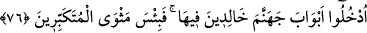

“Betar” şen şakraklık ve verilen nimeti taşıyamamak; bir tür görmediklik, demektir.
“Eşr” şen şakraklığın da aşırısı olup “betar”dan daha ileridir. “Betar” da “ferah”tan
daha ileridir.
Müfredat’a göre ise “ferah” masdarı, henüz elde edilmiş bir lezzetten dolayı insanın
içinin içine sığmamasıdır. Şerîat böyle bir sevince, ancak Allah’ın yardımının ve fazl ü
kereminin söz konusu olduğu şeylerde ruhsat vermiştir. Betar, insana sahip olduğu
nimeti güzel taşıyamamaktan ve onun hakkını veremeyip yönlendirilmesi gereken yere
yönlendirememekten dolayı bulaşan bir şaşkınlık halidir.
“Ve aşırı derecede sevinip böbürlenmenizden ötürüdür.”
“Merah” da sevinç ve şen şakraklığın abartılı ve aşırıya vardırılmış hâlidir. Yâni
şımarma ve şen şakraklıkta aşırıya kaçmıştınız. Kendinizle övünüyor ve kibirle salına
salına yürüyordunuz.
Aristoteles der ki: Böbürlenen, çamura batmış, demektir.
Sâib şöyle diyor:
Fenâ zehiri karşısında aşağıdaki ile yukardaki birdir.
Asma ağaca doğru sarıldığında ne fayda.
76. İçinde ebedî kalmak üzere cehennemin kapılarından girin! Kibirlenenlerin
dönüp gidecekleri yer ne çirkindir!
“İçinde ebedî” âhirette kalacağınız kadar “kalmak üzere cehennemin kapılarından”
yâni her birinize özel olarak ayrılmış kapılardan “girin.” Böylece her topluluk,
kendilerine âid kata gelirler. Hakkı kabul etmeyerek “kibirlenenlerin dönüp gidecekleri
yer” olarak cehennem “ne çirkindir.” Cehennem âsîler için ne kötü bir dinlenme
yeridir.
İbârenin akışının gereği, “kibirlenenlerin girecekleri yer (medhal)” şeklinde
olmasıdır. Böylece âyetin sonu başıyla daha uyumlu olacaktır. Tıpkı “Beytullah’ı ziyâret
et, ne güzel bir ziyaretgâhtır orası! Mescid-i Haram’da namaz kıl, ne güzel namazgâhtır
orası!” örneğinde olduğu gibi.
Evet böyledir; ancak ebedî kalış maksadlı giriş, “
”; yâni ikâmetin sebebi olduğu
içindir ki normalde kullanılması gereken “medhal/giriş yeri”; ikametgâh mânâsındaki “
” kelimesi ile anlatılmış ve böylece ibarenin önü sonuyla birleşmiştir.
Âyette, dünyevî isteklerden ve dünyalık süslerden her birinin gerek dünyadaki nefis
cehenneminin kapılarından gerekse âhiretteki ateş cehenneminin kapılarından bir kapı
olduğuna dâir bir işaret vardır. Bu bakımdan, arzu ve isteklerin, dünyalık süslerin ve
dünyanın yaldızlı, cafcaflı ve güzel şeyleriyle böbürlenmenin bırakılması gerekir.